PC정비사-1급 (2012-09-16 기출문제)
1과목: PC운영체제
1. 모듈이 실행되도록 기억 공간을 할당하고 재배치하여 모듈을 메모리에 적재시켜 주는 시스템 소프트웨어는?
- 컴파일러
- 어셈블러
- 링커
- 로더
(정답률: 48%)

2. 운영체제에서 발생하는 Interrupt에 대한 설명 중 잘못된 것은?
- 어떤 프로세스에게 주어진 시간 할당량이 종료했을 경우
- 어떤 하드웨어에 오류가 발생한 경우
- 어떤 프로세스가 입출력을 위한 시스템 호출을 한 경우
- 어떤 프로세스가 시스템 내부의 다른 프로세스로부터 메시지를 받는 경우
(정답률: 46%)
3. GUI(Graphic User Interface)방식의 OS 특징이 아닌 것은?
- 사용이 간편하다.
- 파일이나 디렉터리를 아이콘화 하여 보여준다.
- 명령을 몰라도 사용할 수 있다.
- CUI(Character User Interface) OS에 비해 실행 속도가 빠르다.
(정답률: 72%)
4. 하나의 컴퓨터 시스템에서 여러 프로그램들이 같이 컴퓨터 시스템에 입력되어 주기억장치에 적재되고, 이들이 처리장치를 번갈아 사용하며 실행하도록 하는 개념은?
- 다중프로그래밍(Multiprogramming)
- 다중프로세싱(Multiprocessing)
- 병렬처리(Parallel Processing)
- 분산처리(Distributed Processing)
(정답률: 48%)
5. 106 키보드를 사용할 경우에, Windows 키와 다른 키를 조합한 기능을 설명한 것 중 잘못된 것은?
- Windows 키 + E : Windows 탐색기
- Windows 키 + Pause : 시스템 등록정보
- Windows 키 + D : 휴지통 비우기
- Windows 키 + M : 열려있는 모든 창 최소화하기
(정답률: 65%)
6. 하드디스크의 일부 공간을 주기억장치(Main Memory)로 사용하는 것을 뜻하는 용어는?
- 리소스(Resource)
- 가상 메모리(Virtual Memory)
- 가상 채널(Virtual Channel)
- 스택(Stack)
(정답률: 84%)
7. Windows XP Home Edition(HE)과Professional Edition(PE)의 차이점을 말한 것 중 올바른 것은?
- HE는 개인만 사용할 수 있고, PE는 기업사용자만 사용할 수 있다.
- HE는 CPU 2개, PE는 CPU 4개까지 지원한다.
- HE에는 없는 CD Writing 기능이, PE에는 기본기능으로 포함되어 있다.
- HE는 Domain 참여기능이 안되지만, PE는 Domain 참여기능이 있다.
(정답률: 59%)
8. Window XP를 설치 과정 중에 키보드 종류를 다음과 같이 선택하였다. 한/영 변환을 위한 키는?
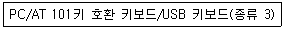
- 오른쪽 CTRL
- CTRL + Alt + Del
- Shift + Space키
- CTRL + C
(정답률: 67%)
9. Windows XP 설치 CD만을 이용하여 Windows XP를 설치할 때의 과정을 올바른 순서로 나열된 것은?
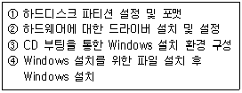
- ③→①→②→④
- ③→①→④→②
- ①→③→②→④
- ④→①→③→②
(정답률: 63%)
10. Windows XP의 '시스템 구성 편집기'에서 편집할 수 없는 파일은?
- WIN.INI
- PROTOCOL.INI
- SYSTEM.INI
- CONFIG.SYS
(정답률: 55%)
11. 다음 그림을 설명한 것으로 관련이 없는 항목은?
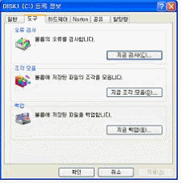
- 하드디스크(C:)의 오른쪽버튼을 눌러 속성을 본 것이다.
- 디스크 조각모음은 단편화를 제거할 수 있다.
- 백업은 하드디스크의 파일들을 플로피디스크나 다른 저장장치에 저장시켜둘 수 있다.
- 오류검사는 디스크의 오류검사는 수행하지만, 디스크 표면검사는 하지 못한다.
(정답률: 64%)
12. Windows XP의 시스템 도구의 백업 유틸리티 마법사의 메뉴에 속하지 않는 것은?
- 백업 마법사
- 자동 시스템 복구 마법사
- 디스크 정리 마법사
- 복원 마법사
(정답률: 57%)
13. 현재의 운영체제는 Windows XP이다. 이러한 환경에서 새로운 사용자를 등록하기 위해 ‘로컬 사용자 및 그룹’ 항목을 이용한다. 이때 각각의 이름에 대한 설명으로 잘못 짝지어진 것은?
- Administrator - 컴퓨터/도메인 관리하도록 기본적으로 제공된 계정
- IUSR_[컴퓨터 이름] - 인터넷 정보 서비스에 액세스 하는데 사용되는 계정
- IWAM_[컴퓨터 이름]- 인터넷 정보 서비스를 시작하는데 사용되는 기본 계정
- IWAM_[컴퓨터 이름]-인터넷 정보 서비스에 액세스 하는데 사용되는 계정
(정답률: 44%)
14. Windows XP에서 기본적으로 지원하지 않는 파일 시스템은?
- EXT2
- FAT16
- NTFS
- CDFS
(정답률: 59%)
15. Windows를 시작하는 데 필요한 하드웨어 관련 파일이 포함된 디스크 볼륨은?
- 시스템 파티션
- 미분할 파티션
- 듀얼 부팅 파티션
- 백업 부팅 파티션
(정답률: 75%)
2과목: PC주변기기
16. JEDEC(Joint Electron Device Engineering Council)에서 제정한 RAM의 규격으로 잘못된 것은?
- ODD
- DDR3
- RD-RAM
- SDR
(정답률: 70%)
17. CPU가 메모리에 데이터 요청 신호 후 전송될 때까지의 지연시간을 의미하는 것은?
- Seek Time
- Transmission Time
- Wait Time
- Access Time
(정답률: 60%)
18. DDR800 규격의 DDR2-SDRAM 두 개를 Dual Channel을 지원하는 메인보드에 장착했을 때 얻을 수 있는 최대 이론적 전송대역은?
- 800MB/s
- 1600MB/s
- 3200MB/s
- 12800MB/s
(정답률: 39%)
19. HDD의 용량을 측정하려 할 때, 사용되는 값이 아닌 것은?
- Cylinder
- Disk
- Head
- Sector
(정답률: 55%)
20. KS X 5002 ‘정보처리용 전반 배열’ 에서 지정한 표준 자판 배열 방식은?
- 세벌식 390 자판
- KPS 9256
- 표준 한글2벌식
- 안마테 자판
(정답률: 69%)
21. 포토샵 프로그램에서 스캐너의 이미지를 입력하기 위해 사용하는 드라이버는?
- TWAIN
- TABLE
- FirmWare
- Burn-Proof
(정답률: 62%)
22. OSD의 기능이 아닌 것은?
- 모니터의 화면 설정
- 사용에 필요한 도움말 기능 표시
- 사용자의 편리성
- VGA와의 호환성 설정
(정답률: 52%)
23. 두 개의 비트맵 장면이 있을 때, 앞에 있는 장면이 투명하게 보이면서 뒤에 있는 장면과 함께 섞여 보이도록 하는 3차원 그래픽 기능을 뜻하는 것은?
- 알파 블렌딩(Alpha-Blending)
- 안개 효과(Fogging)
- 안티 에일리어싱(Anti-Aliasing)
- 바이-리니어 필터링(Bi-linear Filtering)
(정답률: 51%)
24. 모니터로 전송할 데이터를 저장하는 공간은?
- 프레임버퍼
- 버퍼
- DAC
- 비디오칩셋
(정답률: 45%)
25. CPU, 혹은 그래픽 칩에서 발생하는 열을 제대로 냉각시키지 못하면 치명적인 고장을 일으키게 된다. 이 때문에 요즘 메인보드는 LM모듈을 탑재해 쿨링팬의 회전상태나 회전속도를 감시하는 기능이 있다. 팬의 회전속도를 감지할 수 있는 쿨링팬의 배선 수는?
- 1
- 2
- 3
- 4
(정답률: 51%)
26. 음향신호 합성을 위한 방법은 PCM(Pulse Code Modulation)과 FM(Frequency Modulation) 방식이 있다. 이에 대한 설명으로 잘못된 것은?
- PCM : 아날로그-디지털 변환기와 디지털-아날로그 변환기를 이용하여 소리를 녹음, 재생하는 방법이다.
- PCM : 샘플링 주파수가 높을수록 디스크의 저장 공간이 줄어드는 장점이 있다.
- FM : 물체의 진동에 의한 파형을 미리 기억시켜 놓은 후, 이 파형을 직접 조작해 새로운 소리를 만들어 내는 방식이다.
- FM : 주파수 변조 방식의 합성 회로를 이용하여 악보의 음표에 해당하는 악기음을 재생한다.
(정답률: 65%)
27. NIC는 Network Interface Card의 약어로 컴퓨터를 네트워크 호스트로 동작할 수 있도록 만들어 주는 중요한 장비다. NIC는 다른 이름으로 부르는 경우가 많은데 다음 중 NIC와 같은 의미로 사용되지 않는 것은?
- Ethernet Adapter
- Network Adapter
- IDE Card
- LAN Card
(정답률: 65%)
28. 아래 그림은 S-ATA 하드디스크에 전원공급을 위한 젠더이다. 아래 그림의 젠더를 사용해서 전원을 공급했을때, 사용되지 않는 전압은?
- +3V
- +12V
- +5V
- GND
(정답률: 55%)
29. 종료(Termination) 설정이 필요 없는 장치는?
- 스카시 호스트 어댑터
- 동축 케이블을 이용한 네트워크 구성
- 스카시를 이용한 스캐너
- UTP 케이블을 이용한 네트워크 구성
(정답률: 55%)
30. 다음 중 성격이 다른 디바이스는?
- USB 3.0
- SCSI
- PCI
- IEEE 1394
(정답률: 53%)
3과목: 디지털 논리회로
31. 컴퓨터의 핵심인 CPU는 어떤 집적회로(IC, Integrated Circuit) 인가?
- SSI
- MSI
- LSI
- VLSI
(정답률: 47%)
32. 부호 비트를 포함한 총 5개의 비트를 사용하여 10진수 (+13)을 부호화된 2진수로 표현하면?
- 00111
- 10111
- 11101
- 01101
(정답률: 47%)
33. 함수 F=(A'B)+(B'C)+(C'D)의 쌍대(dauality)관계가 옳은 것은?
- (A+B')(B+C')(C+D')
- (AB')+(BC')+(CD')
- (A'+B)(B'+C)(C'+D)
- (A'+B'+C')(B+C+D)
(정답률: 49%)
34. 다음 진리표에 해당하는 논리 기호로 올바른 것은?
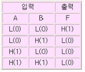
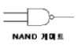
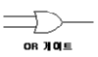
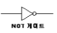
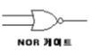
(정답률: 52%)
35. 논리식 X=(A+B)(C+D)를 NOR게이트 형식으로 바꾸려 한다.옳은 표현식은?
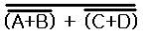
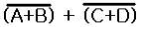
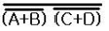
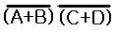
(정답률: 39%)
4과목: PC유지보수
36. BIOS 설정의 내용 중에서 부트 섹터와 파티션 테이블에 기록이 되지 않도록 설정 할 때 사용되는 메뉴는?
- CPU Cache
- Anti Virus Protection
- ROM BIOS Shadow
- Power Management
(정답률: 41%)
37. 다음 중 PnP를 활용할 수 없는 경우는?
- Windows 98, 새 프린터 연결
- Windows XP, USB메모리 연결
- Windows 3.1, 새 프린터 연결
- Windows XP, 새 마우스연결
(정답률: 66%)
38. EMI에 대한 설명으로 잘못된 것은?
- EMI는 미국이나 EU각국이 마련한 전자파 관련 규정중의 하나이다.
- EMI 인증을 받은 기기는 무선 통신 기능을 사용할 수 없다.
- 국내에서는 90년대 중반부터 각종 전기전자 제품에 대한 EMI 검증을 실시하고 있다.
- 전자파에 관한 장애 인증이다.
(정답률: 62%)
39. 시스템 부팅 과정 중 화면에 나오는 "Verifying DMI Pool Data"라는 메시지의 의미는?
- 시스템에 설치된 OS의 종류를 확인한다는 메시지
- CMOS 셋업에 설정된 대로 메인보드에 연결된 각 장치들이 사용하는 자원을 확인하면서 내보내는 메시지
- CMOS에 Data가 없다는 메시지
- POST 과정을 다 끝냈다는 메시지
(정답률: 61%)
40. 아래 그림과 같은 Windows XP STOP 오류를 해결하는 방법에 대한 설명 중 잘못된 것은?
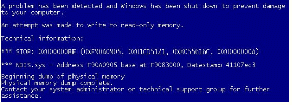
- STOP 오류 메시지에서 STOP 다음에 나오는 '0x0000000A' 가 STOP 오류 코드가 된다.
- STOP 오류가 발생하면 Windows 설정을 변경하거나 시스템에서 특정 장치를 교체한 후에STOP 오류가 발생하는지 살펴봐야 한다.
- STOP 오류는 확장명이 sys, dll, ocx, ttf, fon 같은 시스템 파일이 바뀌어 문제가 발생할 수 있다.
- Windows 옵션 중 시스템 등록정보 -> 고급 -> 시작 및 복구항목에서 STOP 오류 메시지의 화면 표시 여부를 결정할 수 있다.
(정답률: 63%)
41. 시스템에 이상이 있어 포맷 후 Windows를 다시 설치해 해결할 수 없는 경우는?
- Windows 시스템 파일에 문제가 있어 부팅이 되지 않은 경우
- 바이러스 감염 후 백신으로 치료를 했으나 핵심 파일이 손상되어 사용 중의 잦은 다운이나 에러가 발생하는 경우
- 바이오스 손상으로 부팅이 되지 않을 경우
- 하드디스크에 물리적인 배드 섹터가 있어 이를 제거해야 할 경우
(정답률: 62%)
42. Windows를 사용하던 중 “KERNEL32.DLL에서 잘못된 연산이 수행되었습니다.”라는 메시지가 나타나는 이유로 잘못된 것은?
- 어플리케이션간 메모리 충돌이 일어날 때
- KERNEL32.DLL의 버전이 다르거나 손상된 경우
- CPU와 메모리의 FSB가 맞지 않을 경우
- 메인 메모리가 불량인 경우
(정답률: 53%)
43. Windows XP에서 프로그램의 설치와 삭제에 대한 설명 중 잘못된 것은?
- 프로그램이 설치된 폴더를 그냥 삭제해버리면 레지스트리에 프로그램 정보가 안남아 문제가 발생할 수 있다.
- 삭제된 프로그램을 다시 설치하려면 휴지통의 복원 기능을 이용한다.
- 부팅 시 시작 프로그램으로 실행되는 프로그램의 수가 많을 경우 시스템이 느려질 수 있으므로, 불필요한 프로그램은 제거한다.
- 프로그램은 하드디스크에 설치되기 때문에, 하드디스크에 쓰고 지우기를 반복하는 동안에, 하드디스크 중간 중간에 빈공간이 많이 생기는 단편화 현상이 심해질 수 있다.
(정답률: 71%)
44. RAM을 업그레이드하고 컴퓨터를 조립하였더니 화면에 아무것도 나타나지 않고 경고 비프음만 들릴 때, 확인해야 할 사항으로 잘못된 것은?
- RAM의 이상 유무
- 메인보드의 이상 유무
- VGA의 이상 유무
- 키보드의 이상 유무
(정답률: 54%)
45. PC 전원 공급 장치의 출력전압이 정확한가를 측정하고자 할 때 회로시험기의 선택스위치 설정상태로 올바른 것은?
- DCV
- ACV
- R
- mA
(정답률: 69%)
46. Over Clocking에 대한 설명 중 잘못된 것은?
- CPU의 클럭 설정은 점퍼 비율 딥스위치를 조정하거나 BIOS SETUP에서 설정할 수 있다.
- 오버클럭킹을 사용하게 되면 CPU의 온도가 오버클럭킹을 하기전보다 높아지므로 주의한다.
- 오버클럭킹에는 외부 클럭을 올리는 방법과 클럭 배수를 올리는 방법이 있다.
- 메인보드에서 지원하는 클럭 수 보다 높게 오버클럭킹이 가능하다.
(정답률: 58%)
47. 엔비디아(NVIDIA)의 SLI(Scan Line Interacing)를 구성하려고 한다. 구성 시 주의할 사항으로 잘못된 것은?
- SLI 모드를 구성하는 그래픽 카드는 코어, 램댁, 클럭이 같은 동일 칩셋을 사용하는 모델이어야 한다.
- 보급형 메인보드에서는 SLI 모드로 동작할 때는 PCI 익스프레스 16배속이 아닌 8배속 × 2개로 동작한다.
- SLI 모드로 사용하지 않고 한 개의 그래픽 카드만 사용할 경우 반드시 2번 슬롯에 그래픽 카드를 설치해야 한다.
- SLI 구성 메인보드는 반드시 24핀 전원 커넥터 규격의 ATX 2.0 파워서플라이를 사용해야 한다.
(정답률: 70%)
48. CPU가 CAS/RAS 에 신호를 보내어 메모리의 정보가 도착할 때까지의 시간을 나타내는 용어는?
- Lead
- Delay
- Latency
- Integrity
(정답률: 52%)
49. 새로운 하드웨어를 컴퓨터에 장착하였는데 시스템에서 올바로 인식되지 않는다. 이 경우 올바른 대응방법이라 할 수 없는 것은?
- 장치관리자에서 새 하드웨어 삭제 후 장치드라이브를 다시 설치한다.
- [제어판]을 선택한 후 [새 하드웨어 추가]를 선택하고 지시에 따른다.
- 플러그 앤 플레이 기능을 지원하는 장치일 경우 장치 연결을 확인한 후 재부팅 한다.
- [제어판]의 [프로그램 추가/제거]를 이용하여 새 하드웨어를 설치한다.
(정답률: 69%)
50. 시스템의 부팅 속도가 느려지는 원인으로 잘못된 것은?
- 램(RAM)에 기록된 파일의 단편화 심화
- 하드디스크 파일의 단편화 심화
- CMOS Setup에서의 Cache가 disable로 설정
- 바이러스 감염
(정답률: 57%)
5과목: PC네트워크
51. 하나의 건물이나 동일 부지 내에 있는 컴퓨터를 케이블로 연결하여 서로 통신 할 수 있도록 한 통신망을 뜻하는 것은?
- LAN
- WAN
- MAN
- VAN
(정답률: 64%)
52. 패킷 스위칭 기법에 대한 설명으로 잘못된 것은?
- 패킷은 통신회선과 패킷스위치를 통해 전달된다.
- store-and-forward 전송방식을 이용한다.
- 링크에 도착한 패킷을 저장하기 위한 버퍼가 필요 없다.
- 패킷스위칭은 통계적 다중화(StatisticalMultiplexing)을 이용한다.
(정답률: 64%)
53. OSI 7 계층 중 다음에서 설명하는 것은?
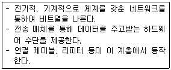
- 응용 계층
- 물리 계층
- 네트워크 계층
- 데이터링크 계층
(정답률: 55%)
54. Star Topology에서 동시에 둘 이상의 Connection이 가능하며 서로 데이터를 주고받는 속도를 보장 받기 위하여 필요한 장치는?
- Bridge
- Repeater
- Switching Hub
- Gateway
(정답률: 53%)
55. 전송 매체 중 내부에 코어와 이를 감싸는 굴절률이 다른 유리나 플라스틱으로 된 외부 클래딩(Cladding)으로 구성되어 있는 전송매체로 올바른 것은?
- Twist Pair 케이블
- CATV 동축 케이블
- 광섬유 케이블
- Baseband 동축 케이블
(정답률: 70%)
56. 다음 중 무선 랜의 기본 전송 기술 중 DSSS(Direct Sequence Spread Spectrum) 방식에 대한 설명 중 잘못된 것은?
- 넓은 대역으로 데이터를 확산하여 전송한다.
- 보안성이 우수하다.
- 강한 잡음에 전송 품질을 매우 잘 유지한다.
- 2.4GHz~2.5GHz 대역의 주파수를 사용한다.
(정답률: 46%)
57. Windows XP가 설치된 컴퓨터 두 대를 연결하려고 할 때 사용할 수 없는 방법은?
- UTP를 이용한 연결
- USB를 이용한 연결
- PS/2를 이용한 연결
- 병렬포트를 이용한 연결
(정답률: 60%)
58. IP 주소 체계에서 가장 많은 네트워크를 수용할 수 있는 클래스는?
- A 클래스
- B 클래스
- C 클래스
- D 클래스
(정답률: 45%)
59. 전화신호의 주파수 대역과 데이터 주파수 대역폭의 통신 채널을 분리하고, 데이터 채널을 통해 고속의 데이터를 송수신하는 방법은?
- 케이블 모뎀
- PSTN
- 광케이블
- ADSL
(정답률: 54%)
60. 외부의 불법 침입으로부터 내부 자료를 보호하고 외부로부터 유해 정보 유입을 차단하기 위한 정책과 이를 지원하는 하드웨어 또는 소프트웨어를 뜻하는 것은?
- 브리지
- 게이트웨이
- 방화벽
- 트랜시버
(정답률: 80%)